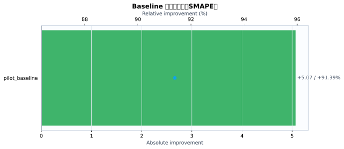
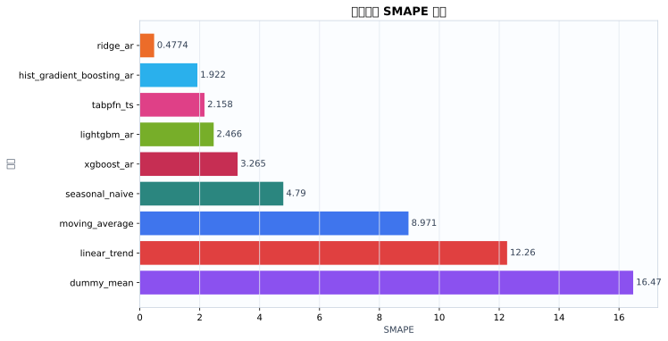
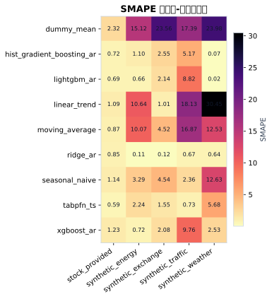
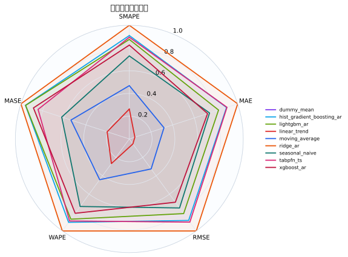
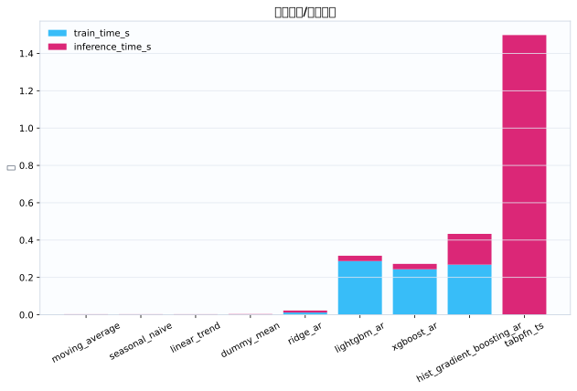
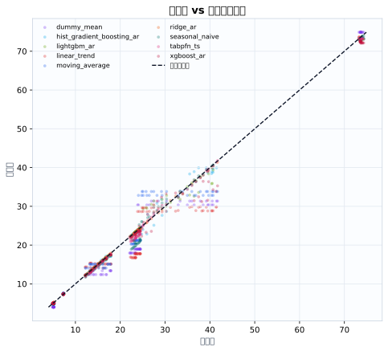
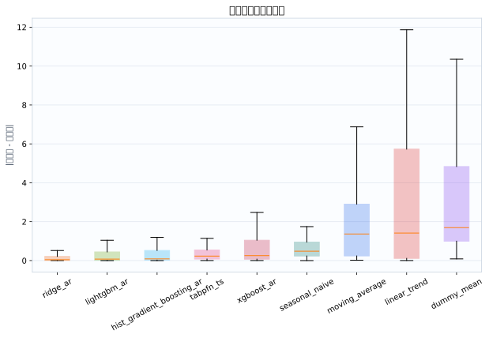

数据集5
模型9
指标行数45
预测行数2160
结论摘要
- 主指标 SMAPE 下，当前 run 的最佳模型是 ridge_ar，平均值为 0.4774。
- 相对 baseline pilot_baseline，当前最佳模型在 SMAPE 上提升 91.39% （absolute=+5.067）。
核心指标卡片
SMAPE
0.4774
最佳模型: ridge_ar
GPU_MEMORY_MB
0
最佳模型: dummy_mean
INFERENCE_TIME_S
0.002697
最佳模型: moving_average
MAE
0.1699
最佳模型: ridge_ar
MASE
0.3586
最佳模型: ridge_ar
MSE
0.1046
最佳模型: ridge_ar
RMSE
0.2235
最佳模型: ridge_ar
TRAIN_TIME_S
0
最佳模型: tabpfn_ts
Baseline 对比
| baseline | metric | current_model | current_value | baseline_model | baseline_value | absolute_difference | relative_improvement_pct |
|---|---|---|---|---|---|---|---|
| pilot_baseline | smape | ridge_ar | 0.4774 | ridge_ar | 5.545 | 5.067 | 91.39 |
动态交互图表
指标排名动态图
残差直方图
效率-精度散点图
数据集排名轨迹
Matplotlib 可视化图表
Baseline 改变量图
{kind=link}

Baseline/模型平均指标柱状图
{kind=link}

数据集-模型热力图
{kind=link}

多指标雷达图
{kind=link}

运行时间图
{kind=link}

真实值-预测值散点图
{kind=link}

残差箱线图
{kind=link}

训练过程曲线
N/A：当前 run 目录未发现 loss/accuracy/TensorBoard/wandb 训练曲线文件。
错误分析与样本分析
当前支持预测任务的残差与真实-预测散点分析；分类 confusion matrix / ROC / PR 曲线需要真实分类输出后自动启用。
原始 Metrics
| run_id | model | dataset | domain | horizon | context_length | mse | mae | rmse | smape | wape | mase | train_time_s | inference_time_s | gpu_memory_mb |
|---|---|---|---|---|---|---|---|---|---|---|---|---|---|---|
| tabpfn_ts_20260528_113043 | dummy_mean | synthetic_energy | energy | 24 | 192 | 7.43 | 2.198 | 2.726 | 15.12 | 14.61 | 5.204 | 0.0005476 | 0.003585 | 0 |
| tabpfn_ts_20260528_113043 | seasonal_naive | synthetic_energy | energy | 24 | 192 | 0.2304 | 0.48 | 0.48 | 3.287 | 3.189 | 1.136 | 0.0003814 | 0.003112 | 0 |
| tabpfn_ts_20260528_113043 | moving_average | synthetic_energy | energy | 24 | 192 | 2.995 | 1.509 | 1.731 | 10.07 | 10.02 | 3.571 | 0.000366 | 0.003134 | 0 |
| tabpfn_ts_20260528_113043 | linear_trend | synthetic_energy | energy | 24 | 192 | 3.178 | 1.592 | 1.783 | 10.64 | 10.58 | 3.769 | 0.0003713 | 0.003563 | 0 |
| tabpfn_ts_20260528_113043 | ridge_ar | synthetic_energy | energy | 24 | 192 | 0.0003402 | 0.01537 | 0.01844 | 0.1079 | 0.1021 | 0.03639 | 0.01531 | 0.01359 | 0 |
| tabpfn_ts_20260528_113043 | hist_gradient_boosting_ar | synthetic_energy | energy | 24 | 192 | 0.09749 | 0.1814 | 0.3122 | 1.098 | 1.205 | 0.4294 | 0.3421 | 0.1959 | 0 |
| tabpfn_ts_20260528_113043 | lightgbm_ar | synthetic_energy | energy | 24 | 192 | 0.04274 | 0.11 | 0.2067 | 0.6642 | 0.7309 | 0.2604 | 0.2978 | 0.03009 | 0 |
| tabpfn_ts_20260528_113043 | xgboost_ar | synthetic_energy | energy | 24 | 192 | 0.03162 | 0.1155 | 0.1778 | 0.723 | 0.7673 | 0.2734 | 0.3568 | 0.02779 | 0 |
| tabpfn_ts_20260528_113043 | tabpfn_ts | synthetic_energy | energy | 24 | 192 | 0.1105 | 0.3191 | 0.3324 | 2.235 | 2.12 | 0.7553 | 0 | 2.291 | 0 |
| tabpfn_ts_20260528_113043 | dummy_mean | synthetic_traffic | traffic | 24 | 192 | 40.21 | 5.633 | 6.342 | 17.39 | 17.17 | 4.09 | 0.0005912 | 0.002543 | 0 |
| tabpfn_ts_20260528_113043 | seasonal_naive | synthetic_traffic | traffic | 24 | 192 | 0.6827 | 0.6836 | 0.8262 | 2.361 | 2.084 | 0.4963 | 0.0004173 | 0.002481 | 0 |
| tabpfn_ts_20260528_113043 | moving_average | synthetic_traffic | traffic | 24 | 192 | 36.68 | 5.467 | 6.056 | 16.87 | 16.67 | 3.969 | 0.0002835 | 0.002774 | 0 |
| tabpfn_ts_20260528_113043 | linear_trend | synthetic_traffic | traffic | 24 | 192 | 48.01 | 5.863 | 6.929 | 18.13 | 17.87 | 4.257 | 0.0003047 | 0.002912 | 0 |
| tabpfn_ts_20260528_113043 | ridge_ar | synthetic_traffic | traffic | 24 | 192 | 0.07348 | 0.2289 | 0.2711 | 0.6707 | 0.698 | 0.1662 | 0.01123 | 0.009825 | 0 |
| tabpfn_ts_20260528_113043 | hist_gradient_boosting_ar | synthetic_traffic | traffic | 24 | 192 | 3.493 | 1.615 | 1.869 | 5.168 | 4.925 | 1.173 | 0.232 | 0.1499 | 0 |
| tabpfn_ts_20260528_113043 | lightgbm_ar | synthetic_traffic | traffic | 24 | 192 | 10.06 | 2.772 | 3.172 | 8.822 | 8.452 | 2.013 | 0.2462 | 0.02698 | 0 |
| tabpfn_ts_20260528_113043 | xgboost_ar | synthetic_traffic | traffic | 24 | 192 | 14.76 | 3.181 | 3.842 | 9.763 | 9.698 | 2.31 | 0.2221 | 0.03156 | 0 |
| tabpfn_ts_20260528_113043 | tabpfn_ts | synthetic_traffic | traffic | 24 | 192 | 0.1142 | 0.2379 | 0.3379 | 0.7317 | 0.7252 | 0.1727 | 0 | 1.389 | 0 |
| tabpfn_ts_20260528_113043 | dummy_mean | synthetic_weather | weather | 24 | 192 | 25.48 | 5.028 | 5.048 | 23.98 | 21.42 | 38.57 | 0.0003899 | 0.002357 | 0 |
| tabpfn_ts_20260528_113043 | seasonal_naive | synthetic_weather | weather | 24 | 192 | 8.652 | 2.771 | 2.941 | 12.63 | 11.8 | 21.25 | 0.000298 | 0.002528 | 0 |
| tabpfn_ts_20260528_113043 | moving_average | synthetic_weather | weather | 24 | 192 | 7.871 | 2.771 | 2.806 | 12.53 | 11.8 | 21.25 | 0.0002734 | 0.002497 | 0 |
| tabpfn_ts_20260528_113043 | linear_trend | synthetic_weather | weather | 24 | 192 | 38.72 | 6.206 | 6.223 | 30.45 | 26.43 | 47.6 | 0.0002741 | 0.002653 | 0 |
| tabpfn_ts_20260528_113043 | ridge_ar | synthetic_weather | weather | 24 | 192 | 0.03013 | 0.151 | 0.1736 | 0.6403 | 0.6433 | 1.158 | 0.01094 | 0.009864 | 0 |
| tabpfn_ts_20260528_113043 | hist_gradient_boosting_ar | synthetic_weather | weather | 24 | 192 | 0.0005571 | 0.01734 | 0.0236 | 0.07341 | 0.07386 | 0.133 | 0.2523 | 0.1446 | 0 |
| tabpfn_ts_20260528_113043 | lightgbm_ar | synthetic_weather | weather | 24 | 192 | 2.807e-05 | 0.004254 | 0.005298 | 0.01807 | 0.01812 | 0.03263 | 0.2993 | 0.02503 | 0 |
| tabpfn_ts_20260528_113043 | xgboost_ar | synthetic_weather | weather | 24 | 192 | 0.4029 | 0.588 | 0.6348 | 2.527 | 2.504 | 4.51 | 0.2094 | 0.02572 | 0 |
| tabpfn_ts_20260528_113043 | tabpfn_ts | synthetic_weather | weather | 24 | 192 | 1.905 | 1.298 | 1.38 | 5.683 | 5.529 | 9.957 | 0 | 1.395 | 0 |
| tabpfn_ts_20260528_113043 | dummy_mean | synthetic_exchange | economics | 24 | 192 | 1.157 | 1.072 | 1.076 | 23.56 | 21.09 | 22.68 | 0.000419 | 0.004174 | 0 |
| tabpfn_ts_20260528_113043 | seasonal_naive | synthetic_exchange | economics | 24 | 192 | 0.06304 | 0.2254 | 0.2511 | 4.536 | 4.435 | 4.769 | 0.0003353 | 0.002625 | 0 |
| tabpfn_ts_20260528_113043 | moving_average | synthetic_exchange | economics | 24 | 192 | 0.05886 | 0.2254 | 0.2426 | 4.519 | 4.435 | 4.769 | 0.0002903 | 0.002551 | 0 |
| tabpfn_ts_20260528_113043 | linear_trend | synthetic_exchange | economics | 24 | 192 | 0.003283 | 0.05138 | 0.0573 | 1.01 | 1.011 | 1.087 | 0.0002789 | 0.00276 | 0 |
| tabpfn_ts_20260528_113043 | ridge_ar | synthetic_exchange | economics | 24 | 192 | 4.538e-05 | 0.006181 | 0.006737 | 0.1216 | 0.1216 | 0.1308 | 0.01098 | 0.00986 | 0 |
| tabpfn_ts_20260528_113043 | hist_gradient_boosting_ar | synthetic_exchange | economics | 24 | 192 | 0.02236 | 0.1289 | 0.1495 | 2.553 | 2.535 | 2.726 | 0.2444 | 0.145 | 0 |
| tabpfn_ts_20260528_113043 | lightgbm_ar | synthetic_exchange | economics | 24 | 192 | 0.01652 | 0.1083 | 0.1285 | 2.139 | 2.13 | 2.291 | 0.3005 | 0.03027 | 0 |
| tabpfn_ts_20260528_113043 | xgboost_ar | synthetic_exchange | economics | 24 | 192 | 0.01626 | 0.1054 | 0.1275 | 2.082 | 2.074 | 2.231 | 0.2228 | 0.02955 | 0 |
| tabpfn_ts_20260528_113043 | tabpfn_ts | synthetic_exchange | economics | 24 | 192 | 0.006988 | 0.07876 | 0.0836 | 1.554 | 1.55 | 1.666 | 0 | 1.282 | 0 |
| tabpfn_ts_20260528_113043 | dummy_mean | stock_provided | finance | 24 | 192 | 0.7528 | 0.7008 | 0.8676 | 2.322 | 1.729 | 0.4707 | 0.0005612 | 0.002826 | 0 |
| tabpfn_ts_20260528_113043 | seasonal_naive | stock_provided | finance | 24 | 192 | 0.1239 | 0.2696 | 0.352 | 1.14 | 0.6653 | 0.1811 | 0.0003035 | 0.002753 | 0 |
| tabpfn_ts_20260528_113043 | moving_average | stock_provided | finance | 24 | 192 | 0.1264 | 0.2536 | 0.3556 | 0.8676 | 0.6259 | 0.1704 | 0.0002778 | 0.002526 | 0 |
| tabpfn_ts_20260528_113043 | linear_trend | stock_provided | finance | 24 | 192 | 0.07053 | 0.2124 | 0.2656 | 1.091 | 0.5242 | 0.1427 | 0.000282 | 0.002705 | 0 |
| tabpfn_ts_20260528_113043 | ridge_ar | stock_provided | finance | 24 | 192 | 0.4192 | 0.448 | 0.6475 | 0.8464 | 1.106 | 0.3009 | 0.01197 | 0.009916 | 0 |
| tabpfn_ts_20260528_113043 | hist_gradient_boosting_ar | stock_provided | finance | 24 | 192 | 0.2179 | 0.3257 | 0.4668 | 0.7173 | 0.8038 | 0.2188 | 0.2718 | 0.1885 | 0 |
| tabpfn_ts_20260528_113043 | lightgbm_ar | stock_provided | finance | 24 | 192 | 0.1806 | 0.2904 | 0.425 | 0.6859 | 0.7166 | 0.195 | 0.2944 | 0.03063 | 0 |
| tabpfn_ts_20260528_113043 | xgboost_ar | stock_provided | finance | 24 | 192 | 1.003 | 0.6922 | 1.001 | 1.228 | 1.708 | 0.4649 | 0.2086 | 0.02859 | 0 |
| tabpfn_ts_20260528_113043 | tabpfn_ts | stock_provided | finance | 24 | 192 | 0.1747 | 0.2777 | 0.4179 | 0.5879 | 0.6854 | 0.1865 | 0 | 1.134 | 0 |
配置参数
展开/折叠配置
{
"/home/wanyi/zy_test/tabpfn-ts-benchmark/configs/config.yaml": {
"defaults": [
{
"dataset": "etth1"
},
{
"model": "seasonal_naive"
},
{
"experiment": "e1_zeroshot"
},
"_self_"
],
"seed": 42,
"output_dir": "results",
"wandb": {
"project": "tabpfn-quant",
"mode": "offline",
"entity": null
},
"hydra": {
"run": {
"dir": "outputs/${now:%Y-%m-%d}/${now:%H-%M-%S}"
}
}
}
}运行环境
{
"python": "3.10.12",
"platform": "Linux-6.8.0-111-generic-x86_64-with-glibc2.35",
"git_head": "N/A",
"git_dirty": false
}Warnings
- 无
产物链接
- metrics.json
- summary.csv
- 源 run 目录: /home/wanyi/zy_test/tabpfn-ts-benchmark/results/full_benchmark_v1_c192_h24_s2
- 主指标: smape